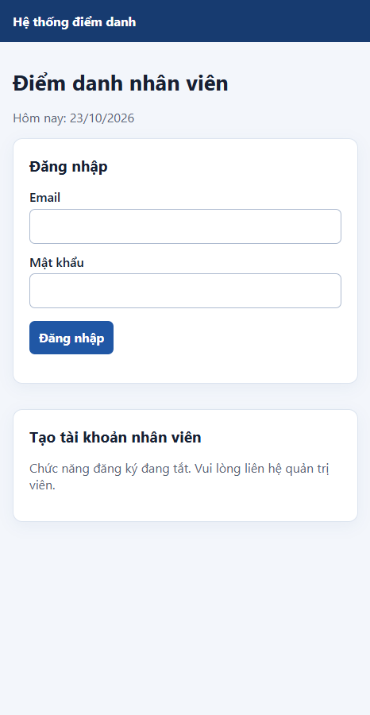
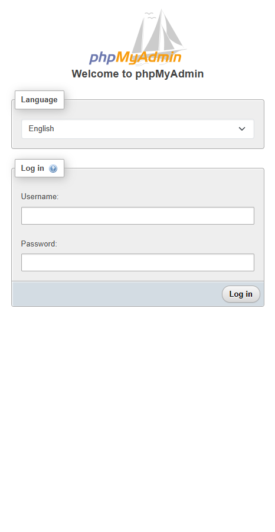
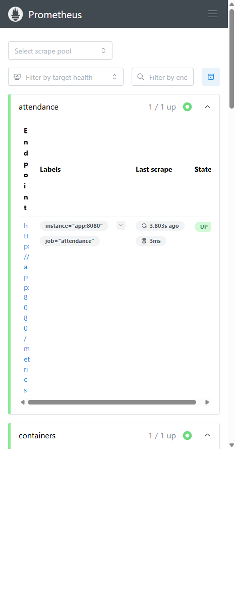
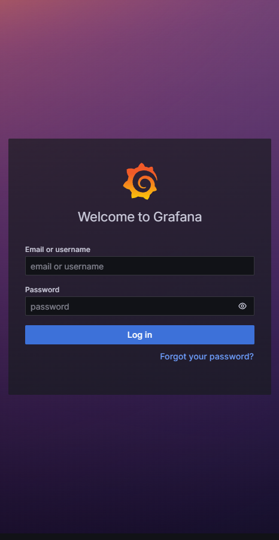

[[TÊN HỌC PHẦN]]
Website điểm danh nhân viên theo ca làm và lịch sử
[[TỈNH/THÀNH PHỐ]] — 2026
Đồ án triển khai một website điểm danh nhân viên theo ca làm, sử dụng PHP 8.3, MySQL 8.4 và Docker Compose. Người dùng đăng nhập, ghi nhận giờ vào/ra và xem lịch sử cá nhân. Hệ thống có phpMyAdmin để quản trị dữ liệu, Nginx làm reverse proxy, Prometheus/Grafana để quan sát metrics và Loki/Promtail để tập trung log.
Đây là bản minh họa học tập, phục vụ một nhóm nhỏ và một host Docker. Tài khoản quản trị ban đầu được tạo từ biến môi trường; đăng ký mở tắt mặc định. Ba ca mẫu được nạp khi MySQL tạo volume lần đầu. Múi giờ nghiệp vụ là Asia/Ho_Chi_Minh. Bản mẫu chưa thay thế quy trình nhân sự chính thức, chưa có phê duyệt nghỉ phép, chấm công đa địa điểm hoặc tích hợp máy chấm công.
PHP/PDO, MySQL, phpMyAdmin, Apache trong container ứng dụng, Nginx, Prometheus, Grafana, Loki, Promtail và cAdvisor cùng các exporter cho MySQL/Nginx.
2Người dùng truy cập cổng Nginx trên loopback của máy host. Nginx chuyển request đến ứng dụng PHP. Ứng dụng sử dụng MySQL trong mạng backend. phpMyAdmin kết nối cùng database nhưng chỉ được publish vào loopback. Prometheus đọc metrics trong mạng monitoring; Grafana truy vấn Prometheus và Loki. Promtail đọc log từ volume dùng chung với ứng dụng/Nginx rồi đẩy đến Loki.
Mạng frontend phục vụ các cổng loopback. Mạng backend nội bộ dành cho ứng dụng, MySQL, phpMyAdmin và MySQL exporter. Mạng monitoring nội bộ kết nối Prometheus, Grafana, Loki, Promtail, cAdvisor, các exporter và endpoint metrics của ứng dụng. MySQL không publish cổng ra host; Loki cũng không publish trực tiếp.
MySQL, Grafana, Prometheus, Loki, vị trí Promtail và log ứng dụng dùng named volume riêng. Cấu hình được mount read-only khi phù hợp. File .env chứa secrets cục bộ, được loại khỏi Git.
3Các thao tác thay đổi dùng POST và token CSRF. Session ID được đổi sau đăng nhập/đăng ký; cookie HttpOnly và SameSite Strict. Mật khẩu băm bằng password_hash, truy vấn database dùng prepared statement và dữ liệu hiển thị được escape HTML. Đăng ký tạo tài khoản tắt mặc định; khi cần dùng demo, bật tạm thời trong .env rồi tắt lại.

Ca làm mẫu gồm sáng, chiều và tối. Ứng dụng chỉ hiển thị lịch sử của người đang đăng nhập, giới hạn 100 bản ghi gần nhất. Database đặt unique key trên nhân viên, ca và ngày để chống tạo trùng kể cả khi có request đồng thời.
4| Bảng | Trường chính | Vai trò |
|---|---|---|
| employees | id, name, email, password_hash, created_at | Tài khoản nhân viên và thông tin đăng nhập. |
| shifts | id, name, start_time, end_time | Danh mục ca làm. |
| attendance | employee_id, shift_id, attendance_date, checked_in_at, checked_out_at | Bản ghi vào/ra theo nhân viên, ca và ngày. |
Toàn bộ bảng dùng InnoDB và utf8mb4. Email nhân viên duy nhất; attendance có khóa ngoại đến employees và shifts, unique key theo nhân viên/ca/ngày, cùng index trên ngày. Xóa nhân viên có thể xóa dữ liệu liên quan; xóa ca có bản ghi tham chiếu bị ngăn để giữ toàn vẹn dữ liệu.
database/init.sql chạy khi volume MySQL mới được tạo. Tài khoản ứng dụng chỉ có quyền trên database attendance. Tài khoản metrics riêng chỉ nhận các quyền SELECT, PROCESS và REPLICATION CLIENT cần thiết cho MySQL exporter. phpMyAdmin là giao diện quản trị, không dùng làm database backend của ứng dụng.

Lưu ý vận hành: sửa init.sql không tự áp dụng cho volume hiện hữu. Thay đổi schema cần migration có kiểm soát; không xóa volume dữ liệu để chạy lại init trong môi trường cần giữ dữ liệu.
5Nginx lắng nghe cổng 8080 trong container, publish ra host tại 127.0.0.1:18270 và reverse proxy request đến dịch vụ app. Cổng phpMyAdmin 18271, Prometheus 19027 và Grafana 13027 cũng chỉ bind vào loopback. Dải cổng riêng tránh xung đột với dịch vụ đã chạy trên host.
Đã gọi website qua cổng Nginx và nhận HTTP 200. Response có các security headers yêu cầu; header Server chỉ báo Nginx, không lộ phiên bản. Nginx chạy UID 33, filesystem read-only và không giữ Linux capabilities.
http://localhost:18270/ Website http://localhost:18271/ phpMyAdmin http://localhost:19027/ Prometheus http://localhost:13027/ Grafana6
Prometheus scrape mỗi 15 giây. Năm job theo dõi endpoint metrics ứng dụng, Loki, MySQL exporter, Nginx exporter và cAdvisor. Metrics ứng dụng gồm tổng số bản ghi và số bản ghi theo ngày. MySQL exporter dùng tài khoản giám sát riêng. Nginx exporter đọc stub_status chỉ trên mạng monitoring. cAdvisor thu thập tài nguyên container qua các mount chỉ đọc.
Grafana tự nạp dashboard “Attendance - Operations” với sáu panel: trạng thái scrape target, bản ghi điểm danh hôm nay, kết nối hoạt động Nginx, thread MySQL, working set memory container và log gần đây từ Loki. Hai datasource Prometheus/Loki được provision tự động.

Kiểm tra runtime ghi nhận các job attendance, containers, Loki, MySQL và Nginx ở trạng thái up. Các chỉ số attendance_records_total, attendance_records_today, mysql_up, nginx_connections_active và container_memory_working_set_bytes đều có sample.
7Nginx ghi access log dạng JSON và error log vào volume app-logs. Apache/PHP ghi error log vào cùng volume. Promtail mount volume read-only, gắn nhãn job, parse trường status từ JSON và chuyển log đến Loki qua mạng monitoring. Grafana dùng datasource Loki để truy vấn.
# Toàn bộ access log Nginx
{job="attendance-nginx"}
# Request GET trang chủ
{job="attendance-nginx"} |= "GET / "
# Chỉ request có HTTP status 500
{job="attendance-nginx",status="500"}
# Log lỗi PHP
{job="attendance-php"}
Ba truy vấn đầu đã chạy qua API query_range của Loki; các truy vấn log Nginx trả về stream. Truy vấn status 500 có thể trả kết quả rỗng nếu chưa phát sinh lỗi 500, điều đó là hợp lệ. Khi demo, mở Grafana → Explore → Loki và chọn khoảng thời gian có request gần đây.
Loki dùng filesystem storage trong volume và retention 168 giờ cho bản demo. Với môi trường thật cần backup, giám sát dung lượng, xác thực truy cập và object storage phù hợp. Log không ghi mật khẩu hoặc token.

| Biện pháp | Cách áp dụng | Cách kiểm tra |
|---|---|---|
| Non-root | App và Nginx chạy UID/GID 33. | docker compose exec app/nginx id. |
| Network isolation | Backend và monitoring là internal; service chỉ tham gia network cần thiết. | Kiểm tra networks trong Compose. |
| Hạn chế cổng | MySQL/Loki không publish; các UI chỉ bind 127.0.0.1. | docker compose ps và kiểm tra port binding. |
| Least privilege | Tài khoản app giới hạn vào attendance; metrics account chỉ có quyền đọc/giám sát. | Kiểm tra grants MySQL. |
| Container hardening | App/Nginx read-only filesystem, cap_drop ALL, no-new-privileges. | Kiểm tra Compose và trạng thái container. |
| Web/session | Prepared statements, password hashing, CSRF, HttpOnly/SameSite, security headers. | Kiểm tra source, response headers và luồng form. |
| Secrets | Mật khẩu ngẫu nhiên ở .env, .env bị ignore khỏi Git. | Kiểm tra .gitignore, không commit file .env. |
cAdvisor cần đọc metadata runtime của Docker để cung cấp metrics container; các mount được đặt read-only và endpoint không publish ra host. Không mở giao diện quản trị ra Internet. Các secrets trong file .env là phục vụ demo cục bộ và phải được thay/luân chuyển trước khi triển khai thật.
9Copy-Item .env.example .env # Đặt các mật khẩu ngẫu nhiên riêng biệt trong .env docker compose up -d --build docker compose ps
Tài khoản admin: giá trị APP_ADMIN_EMAIL/APP_ADMIN_PASSWORD trong .env. Grafana: GRAFANA_ADMIN_USER/GRAFANA_ADMIN_PASSWORD. Không đưa các giá trị này vào ảnh chụp công khai hoặc repository.
Đồ án kết hợp nghiệp vụ điểm danh với vận hành container, observability, logging và hardening cơ bản. Hướng phát triển gồm quản lý nhân viên/ca qua giao diện admin, migration schema, phân quyền chi tiết, kiểm thử tự động, TLS, backup/restore, cảnh báo Prometheus và chính sách retention theo môi trường.
Thông tin repository GitHub: Chưa tạo; bổ sung URL sau khi xuất bản repository.
Commit 1: Nginx reverse proxy/ứng dụng · Commit 2: Prometheus/Grafana · Commit 3: Loki/Promtail
Hoàn thiện trước khi nộp: bổ sung tên học phần, tỉnh/thành phố, ảnh dashboard Grafana sau khi đăng nhập, URL repository và mã commit thật.
10